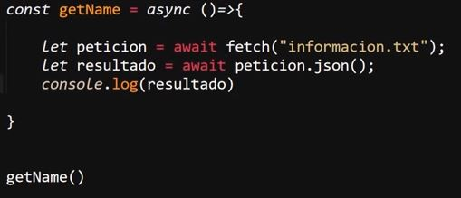

Fetch Axios con Await y Asinc
Como ya se a establecido en apartados anteriores "fetch" y "axios" son los dos mejores metodos para trabajar con las peticiones actualmente, sin embargo por optimizados que se encuetran estos elementos es necesario añadir una capa asincrona extra para que estas puedan realizar todas las funciones sin generar ningun error o conflicto.
Esta capa asincrona se realiza con "await" y "async", esto debido a que permite definir las funciones como asincronas así como tambien indicar el flujo de ejecución de los bloques de codigo, es decir que elementos deben esperar por el resultado de la petición.
Para este apartado se parte del siguiete ejemplo de codigo, en el cual se define una petición "fetch" dentro de una función, sin embargo pese a que la función esta bien estructurada ciertas funcionalidades como "console.log" no se pueden ejecutar debido a que al realizarse el llamado de la función, la cual no es una función asincrona esta busca ejecutar los comandos inmediantamente sin esperar el resultado de la petición, por lo cual al imprimir el resultado en consola los datos siempre resultaran "undefined".
Nota: Este ejemplo tiene incorporado un ".catch" El cual pertenece a las funcioes asincronas para manejar los errores.
En estos casos se incorpora "await" y "async", para emplear la capa asincrona sobre la petición y de ese modo los bloques de codigo que requeran de los datos de esta esperen a la obtención de estos, de ese modo al llamar a la función esta esperara adecuadamete el resultado de la función antes de ejecutarse, por lo que metodos como "console.log" se podran ejecutar sin problema.
Para incorporar "async" y "await" en una función con la función "fetch", como en el siguite ejemplo:

Es necesario tener presentes varios aspectos de "await", de "async" y de "fetch".
-
Se define la función como asincrona, para lo cual se añade la palabra clave "async" delante de esta
-
Se guardan los datos en una variable utilizando el metodo "await" para acceder a los datos resultantes de la promesa, recordar que "await" permite obtener directamente los datos sin recurrir al uso de ".then( ) (tener en cuenta que con ".then" los datos estarian encapsulados, pero esto no pasa con "await")"
-
Debido a que "fetch" retorna una promesa encapsulada se usa "await" para acceder a esta, los datos almacenados en la variable "petición" son la promesa encapsulada.
-
Para acceder a los datos encapsulados dentro de la promesa se utiliza el metodo ".json()" para combertirla a formato JSON y almacenarlos en la variable "resultado"
De ese modo se puede acceder a los datos retornados desde la petición "fetch" usando "await" y "async" para realizar la función asincrona.
Resultado
A continuación se muestran dos ejemplos con el mismo resultado, el primero se trata de dos funciones sincronas que utilizan "await" "async" para trabajar con una petición de "fetch", obtener el resultado de esta y luego imprimir en pantalla los datos segun el boton que se presione.
Ejemplo con Fetch
Este segundo ejemplo se trata del mismo codigo, con la misma estructura pero trabajando con ua petición de "axios":
Ejemplo con Axios
Nota: Recordar que axios simplifica aún más el codigo de "fetch", por lo que la variable "peticion" se elimina, ya que tanto la petición como la obtención de los datos se realiza en la linea de la variable "resultado", del mismo modo, se ajusta la seleccion de los datos al usar "InenrHTML" ya que "axios" retorna la petición completa, por lo tanto la ruta hasta los datos deseados cambia (resultado.data.edad / resultado.data.nombre).